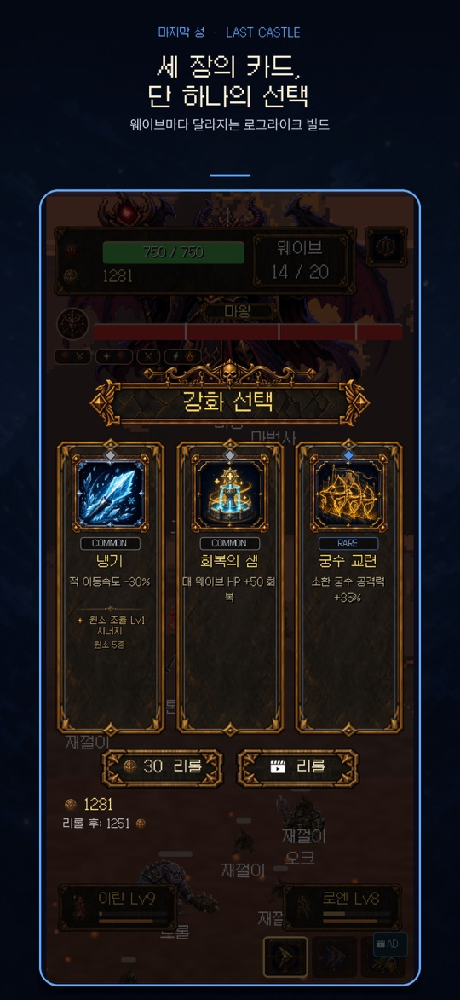
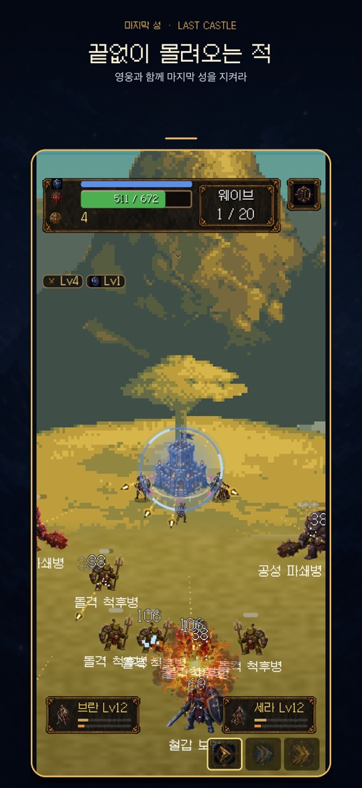
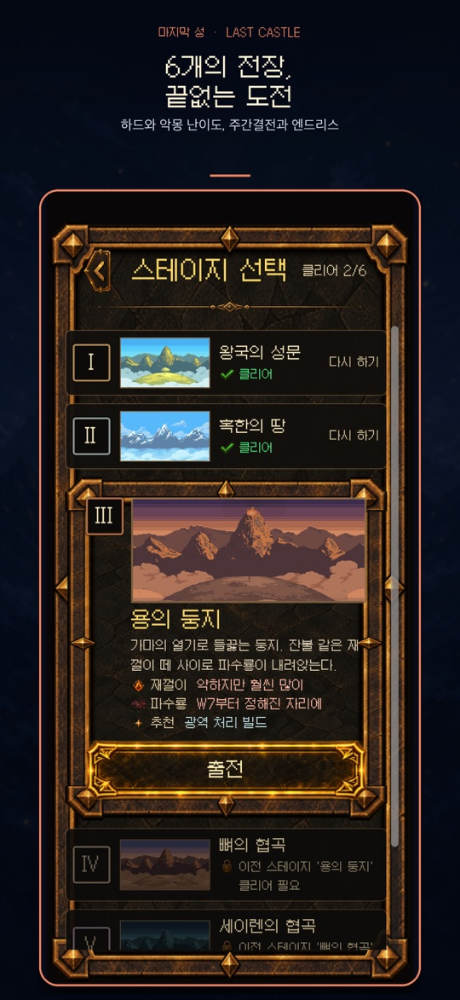

라스트캐슬은 성이 자동으로 싸우고 플레이어가 웨이브 사이 강화 카드를 고르는 디펜스입니다. 카드가 강해 보이는지만 보지 말고, 효과가 적용되는 대상, 필요한 시점, 포기하는 선택을 차례로 확인해 보세요. [S1][S2]
이 글은 실제 클리어 공략이 아닙니다. 공개 스토어 설명과 기존 공식 홍보 화면을 읽는 선택 가이드입니다. 확인한 App Store 버전은 1.7.3이며 Google Play 업데이트 설명에도 1.7.3이 표시됩니다. 홍보 화면이 그 빌드에서 촬영됐다는 연결 증거는 없으므로, 화면의 숫자를 모든 버전의 고정 규칙으로 사용하지 않습니다. [S1][S2][S3]
첫 번째 결정: 회복, 냉기, 궁수 강화 중 무엇을 검토할까?
기존 강화 선택 이미지에는 성 HP 750/750, 웨이브 14/20이 보이고 다음 후보가 나란히 있습니다. 이것은 플레이 결과가 아니라 한 화면의 관찰입니다. [S3]

| 화면에 보이는 후보 | 설명에서 읽을 수 있는 차이 | 선택 전에 확인할 것 |
|---|---|---|
| 냉기 | 적 이동속도 −30% | 최근 위험이 적의 접근 속도와 관련 있었는가? |
| 회복의 샘 | 매 웨이브 HP +50 회복 | 지금 빈 HP를 채우려는가, 이후 피해에 대비하려는가? |
| 궁수 교련 | 소환 궁수 공격력 +35% | 이번 런에 이 강화의 대상인 소환 궁수가 있는가? |
이 화면의 HP는 가득 차 있습니다. 따라서 “HP가 낮으니 회복을 고른다”는 설명을 붙일 수 없습니다. 그렇다고 회복이 무가치하다는 뜻도 아닙니다. 이후 피해에 대비하는 선택과 지금 당장 비어 있는 HP를 메우는 선택을 구분해야 한다는 뜻입니다. ‘매 웨이브’라는 문구만으로 즉시 회복이나 정확한 발동 시점까지 단정하지 마세요.
궁수 교련에는 ‘소환 궁수’라고 적혀 있습니다. 화면 아래에 영웅이 보인다는 이유만으로 그 영웅의 공격력이 올라간다고 읽으면 안 됩니다. 대상이 확인되지 않으면 수치가 더 커 보인다는 이유만으로 우선하지 마세요. 냉기도 같은 원리입니다. 이동속도를 낮추는 설명은 현재 붙어 있는 적을 즉시 제거한다거나 보스의 모든 공격을 막는다는 약속이 아닙니다.
다음 행동: 내 판에서 카드 설명과 보유 효과를 확인한 뒤, “접근을 늦추기 / 이후 회복을 준비하기 / 이미 있는 소환 궁수를 강화하기” 중 지금 해결하려는 문제를 하나 정하세요. 이 화면만으로는 보유 카드 전체, 소환 궁수 유무, 직전 피해 양상을 알 수 없어 세 후보 중 정답을 고를 수 없습니다. 이 빈 정보를 인정하는 것이 희귀도만 보고 고르는 것보다 유용합니다.
두 번째 결정: 지금 선택할까, 리롤할까?
같은 화면에는 보유 골드 1281, 골드 리롤 30, ‘리롤 후: 1251’이 표시됩니다. 광고 모양이 있는 별도 리롤 버튼도 보입니다. 이 숫자는 해당 홍보 화면의 표시값이지, 매번 같은 비용이라는 뜻이 아닙니다. 광고 버튼의 존재도 현재 기기에서 광고가 열리거나 보상이 지급된다는 증거는 아닙니다. [S3]
리롤은 화면에 있는 후보를 버리고 새 후보를 기다리는 결정입니다. 원하는 카드가 나올 확률이나 다음 후보를 이 이미지로 알 수는 없습니다. 따라서 ‘원하는 카드가 나올 때까지’보다 아래 순서로 판단하세요.
- 현재 후보 중 내 판의 확인된 문제에 대응하는 카드가 있는지 먼저 봅니다.
- 있다면 그 카드를 포기하고 다시 뽑을 이유를 말해 봅니다. 단지 더 높은 희귀도가 보고 싶은 것과, 지금 후보의 적용 대상이 없는 것은 다른 이유입니다.
- 다시 뽑는다면 내 화면의 비용과 남는 골드를 확인합니다. 재추첨 뒤에도 필요한 지출 여유를 남길지는 현재 판에서 직접 판단해야 합니다. 이 글에는 상점 가격이나 필수 예산을 입증할 자료가 없습니다.
선택 기준: 현재 후보가 실제 문제를 다루고 있다면 바로 선택하는 쪽부터 검토하세요. 모두 적용하기 어렵고 표시된 지출을 감수할 수 있을 때 리롤을 검토하세요. 이는 지출 전에 이유를 명확히 하는 방법이지, 승률이 검증된 전략이나 리롤 금지 규칙이 아닙니다.
패배 뒤에는 마지막 카드만 보지 말고 판단 한 지점을 기록하세요
다음 런을 위한 기록은 길 필요가 없습니다. 플레이 도중 기억할 수 있는 한 지점에서 아래 순서로 메모하세요. 앱에 이 기록 양식이 있다는 뜻은 아닙니다.
- 관찰: 어떤 적이 남았고 언제 HP가 줄었는가? 버전·스테이지·난이도와 선택 직전 상태를 함께 적습니다.
- 판단: 어떤 후보 사이에서 무엇을 해결하려 했는가? 기억나지 않는 값은 비워 둡니다.
- 결과: 고른 뒤 그 문제가 줄었는가, 그대로였는가, 확인하지 못했는가?
- 다음 확인: 다음번에는 무엇 하나를 더 볼 것인가? 예를 들어 소환 궁수용 강화를 고르기 전에 대상 유무를 확인할 수 있습니다.
HP가 줄었다는 관찰만으로 회복 부족이라고 결론 내리지 마세요. 적을 처리하지 못해 피해가 계속 쌓였을 수도 있고, 효과의 적용 대상을 잘못 읽었을 수도 있습니다. 반대로 화력을 골랐다는 이유만으로 회복을 포기한 것이 패인이라고 단정할 수도 없습니다. 버전, 영웅, 영구 강화, 제시 카드가 달라지면 다음 런의 결과도 달라집니다. 한 번의 성공은 정답 증명이 아니고, 한 번의 실패는 카드가 쓸모없다는 증명이 아닙니다.
처음 시작한다면
처음 시작한다면 웨이브 사이 카드 설명을 읽는 데 먼저 익숙해지세요. 설치는 Google Play, App Store, 원스토어에서 확인할 수 있습니다. 플랫폼별 버전이 같다고 가정하지 마세요. 화면과 실제 동작이 다르면 기기·버전·스테이지와 캡처를 ricecookey.help@gmail.com으로 보내 주세요. 이 정보가 왜 중요한지는 선택 정보에 관한 제작 분석에서 이어집니다.
공식 홍보 화면
App Store 한국 스토어에 게시된 기존 공식 홍보 이미지입니다. 상단 홍보 문구가 포함되어 있으며, 실제 플레이 검증 자료가 아니고 촬영 빌드는 확인되지 않았습니다.



스토어 링크
무료 버전(광고·앱 내 유료 상품 포함)
iOS 15.0 이상, 연령 등급 12+(App Store 기준). 플랫폼별 버전이 같다고 가정하지 마세요.
문의
질문, 요청, 버그 제보: ricecookey.help@gmail.com
출처
- S1: App Store 한국 — 설명과 1.7.3 변경 공지
- S2: Google Play — 설명과 1.7.3 변경 공지
- S3: 기존 공식 홍보용 강화 선택 이미지 — 실제 런 검증 자료가 아니며 촬영 빌드는 미확인.
- 제작 분석: 선택 화면은 무엇을 알려 주고, 무엇을 남기는가
2026년 11월 5일은 위 공개 페이지를 읽은 날짜이며, 그 뒤의 스토어 변경을 다시 확인했다는 뜻이 아닙니다. 앱 안의 표시가 이 페이지보다 우선합니다.
English
Last Castle combines automatic castle combat with upgrade choices between waves. Before asking whether a card looks powerful, check who receives its effect, when you need it, and what you give up by choosing it. [S1][S2]
This is not a tested clear strategy. It is a decision-reading guide based on public store descriptions and an existing official promotional image. The App Store lists version 1.7.3, and Google Play's update notes also name 1.7.3. We do not have evidence connecting the image's capture to that exact build, so its numbers are not treated as fixed rules for every version. [S1][S2][S3]
Decision one: recovery, slowing enemies, or an archer upgrade?
The existing upgrade image shows castle HP of 750/750 and wave 14/20, alongside these choices. This is a visible state, not a recorded outcome. English descriptions below translate the Korean image; they are not verified English UI labels. [S3]
| Visible card | Difference described on the card | Question before choosing |
|---|---|---|
| 냉기 — frost | Enemy movement speed −30% | Was the recent danger connected to enemies approaching too quickly? |
| 회복의 샘 — recovery fountain | Recover 50 HP each wave | Are you trying to fill missing HP now, or prepare for later damage? |
| 궁수 교련 — archer training | Summoned archer attack +35% | Do you have the summoned archers this upgrade affects? |
HP is full in this image. We cannot describe this as a low-HP recovery decision. That does not make recovery worthless: preparing for future damage is different from filling a current deficit. “Each wave” alone does not establish immediate healing or its precise trigger time.
The archer card names summoned archers. Heroes visible below the cards do not establish that those heroes receive this upgrade. If the recipient is unconfirmed, a larger percentage is not a reason to favor it. Apply the same care to frost: a movement-speed description does not promise to remove enemies already present or stop every boss attack.
Your next action: check your own card text and existing effects, then name the problem: slow the approach, prepare future recovery, or strengthen existing summoned archers. This image does not reveal the full build, whether summoned archers are present, or the recent damage pattern. It cannot establish a winner among the three cards. Recognizing that missing information is more useful than choosing by rarity alone.
Decision two: choose now or reroll?
The same image shows 1281 gold, a gold reroll costing 30, and 1251 remaining afterward. A separate button has an advertisement symbol. These are values shown in this image, not universal costs. The ad button also does not prove that an advertisement will load or award a reward on your device today. [S3]
Rerolling means giving up the visible candidates for another selection. The image does not reveal the probability of your desired card or what will appear next. Instead of rerolling until a favorite arrives:
- Check whether a current candidate addresses a problem you have actually identified.
- If it does, name your reason for passing it up. Wanting a rarer card is different from having no recipient for a current card's effect.
- If you reroll, read your screen's cost and remaining gold. Decide from your current run whether to reserve funds for other spending. This guide has no evidence for a required shop budget or specific prices.
Decision rule: consider taking a current candidate first when it addresses the problem. Consider rerolling when the options are hard to use and you accept the displayed expense. This is a way to state your reason before spending, not a proven win-rate strategy or a ban on rerolling.
After a loss, record one decision—not just the last card
At one point you can remember from the run, write a short note. This is a suggested personal record, not a form provided by the game.
- Observation: which enemies remained, and when did HP fall? Include version, stage, difficulty, and the state before your choice.
- Reason: which options did you compare, and what problem were you trying to solve? Leave forgotten values blank.
- Result: did that problem lessen, remain, or go unobserved?
- Next check: what single thing will you inspect next time? For example, confirm a summoned archer is present before selecting an upgrade for it.
Falling HP alone does not prove insufficient healing. Enemies may have remained alive and continued causing damage, or you may have misread an effect's recipient. Choosing damage does not prove that passing up recovery caused the loss, either. Versions, heroes, permanent upgrades, and offered cards can differ between runs. One success does not prove an optimal choice; one failure does not prove a useless card.
For a first run
For a first run, begin by learning to read the cards between waves. Check availability on Google Play, the App Store, or ONE Store. Do not assume their versions match. If the screen and behavior disagree, send your device, version, stage, and capture to ricecookey.help@gmail.com. Continue with the production analysis of decision information.
Official promotional images
Existing official promotional images from the Korean App Store listing, including promotional captions and Korean UI. They are not evidence from a verified run, and the capture build is unconfirmed.
Store links
Free edition (ads and paid in-app items)
Requires iOS 15.0 or later, rated 12+ (App Store). Do not assume versions match across platforms.
Contact
Questions, requests and bug reports: ricecookey.help@gmail.com
Sources
- S1: Korean App Store — description and version 1.7.3 notes
- S2: Google Play — description and version 1.7.3 notes
- S3: Existing official promotional upgrade image — not evidence from a verified run; capture build unconfirmed.
- Production analysis: what a choice screen tells us—and what it leaves open
November 5, 2026 is the date these public pages were read; it does not mean later store changes were re-checked. What the app shows takes precedence over this page.